Edo Kiriko — where every cut is a conversation with light, Tokyo.
Performance Model · Spring Summer 2026
Light made solid. Precision born where Edo Kiriko crystal meets automotive Manufaktur.
Light held inside solid form — the way amber holds a moment, the way crystal holds the memory of heat.
Edo Kiriko — Tokyo's own tradition of cutting geometric patterns into crystal since 1834. Precision that transforms raw material into a vessel for light. A discipline where every facet is calculated, every angle considered, every cut a conversation between the artisan's hand and the material's will.
"When light becomes material, the car becomes a lantern."
Edo Kiriko — where every cut is a conversation with light, Tokyo.
A transparent amber-orange material inspired by haute horlogerie watchmaking. Cast crystal resin — transparent, amber-orange, borrowed from haute horlogerie — where you can embed forms and colors within solid material. A substance that carries light the way amber carries time.
In the world of fine watchmaking, crystal cases are objects of obsession — transparent housings that reveal the mechanism within. Tokyo takes this principle and scales it to the interior. Dashboard elements, door panel accents, steering wheel spokes, speaker surrounds — each one a crystal component that glows like captured amber light.
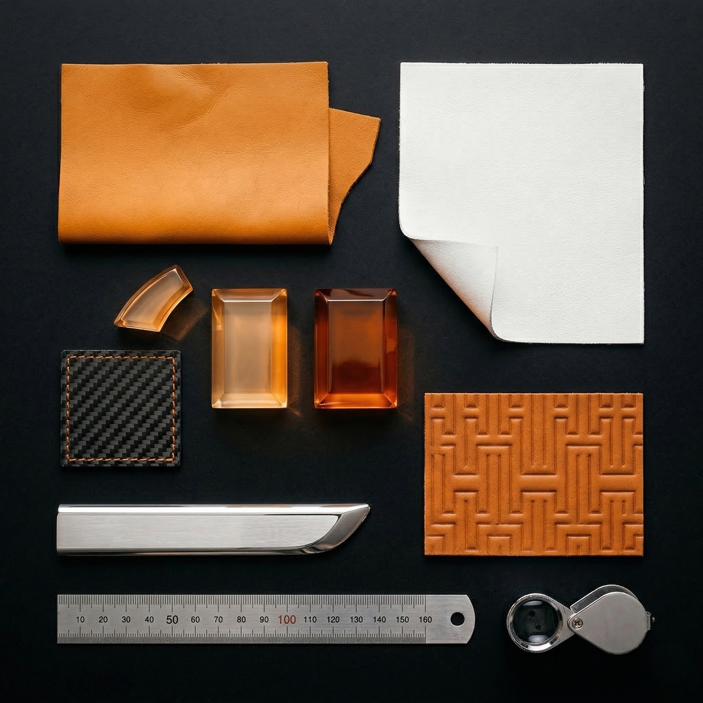
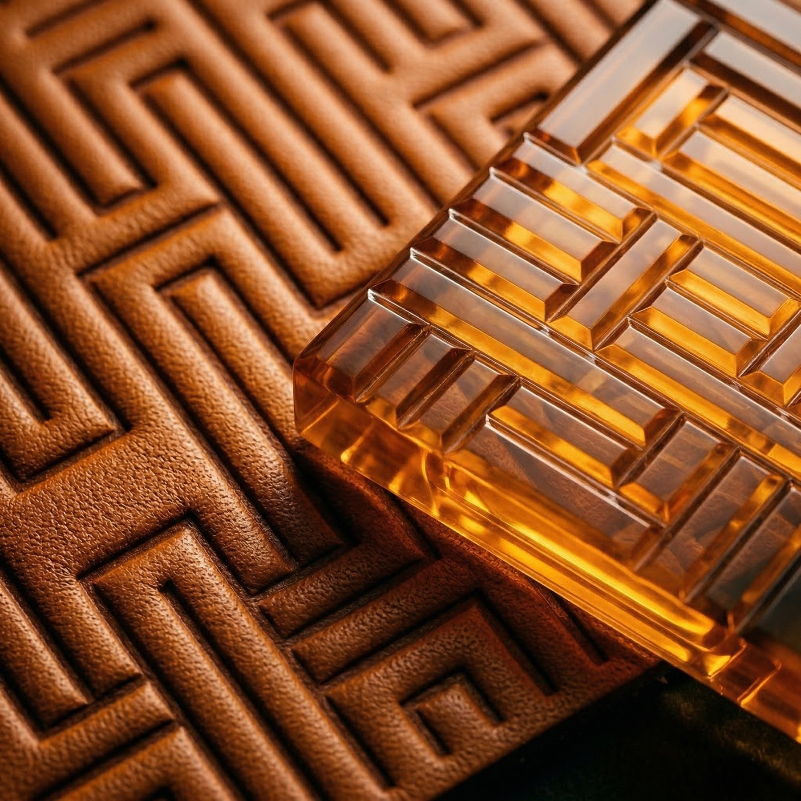
Material study — cast crystal resin, amber-orange against silver.
H-pattern leather meets crystal resin — geometric DNA.
Crystal and caustic light — the quality Tokyo captures in solid form.
Tokyo's palette is a conversation between fire and structure — amber warmth held inside silver architecture. Silver — precise, architectural, the color of machined metal. Amber-Orange — the warm pulse of crystal resin glowing from within.
Silver is the city. The structure. The grid of Tokyo's skyline at dusk. Amber-orange is the fire within — the lantern glow, the molten glass, the last light trapped in crystal before it cools.
A temperature relationship, rendered as a palette.

The pour — where liquid fire becomes solid form.

HOF G · V — Tokyo · Composition II · Side Profile · Tokyo at night.
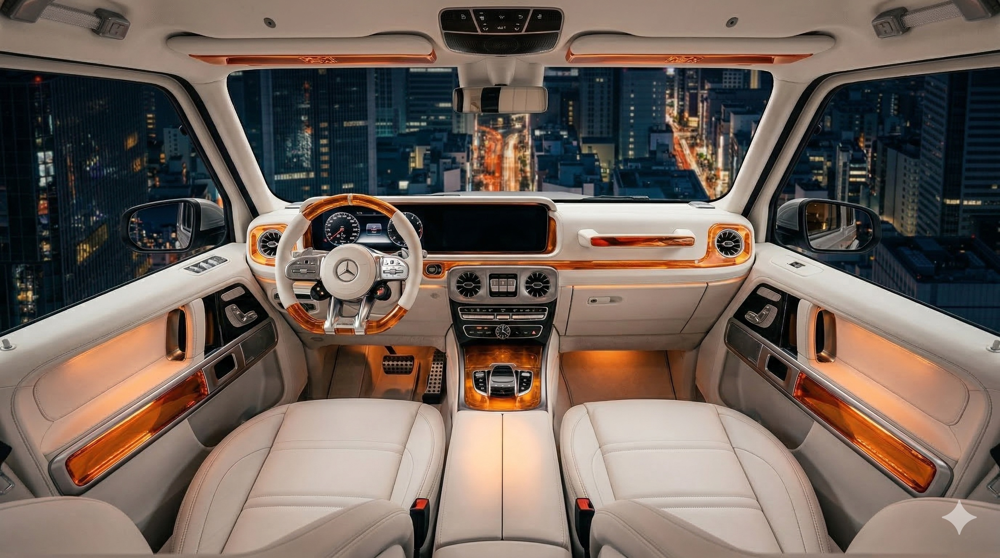

Expression II — white leather gallery, amber crystal resin catching Tokyo's night skyline.
Composition II — all orange, the Sport Silhouette under studio light.
Two interior expressions. Expression I: deep amber leather with orange crystal resin — a warm cockpit wrapped in fire tones. Every surface radiates. The seats, embossed with the H-pattern, ground the warmth in geometric order. The crystal elements across dashboard and door panels glow like embers held in silver settings.
Expression II: white leather against orange crystal resin — a gallery space where every amber element reads as a jewel against snow. Clinical precision meeting organic warmth. The same crystal components, now thrown into sharp relief, each one a specimen of captured light.
The H-pattern connects everything — embossed into leather, cut into crystal, the geometric DNA that links Edo Kiriko tradition to HOF design language.
"We don't illuminate cars. We embed light."
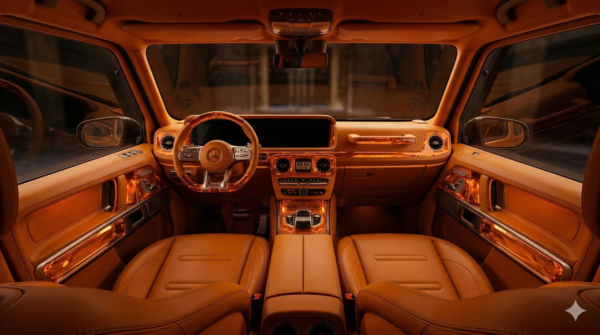
Expression I — a warm cockpit where amber leather and crystal resin become one continuous flame.
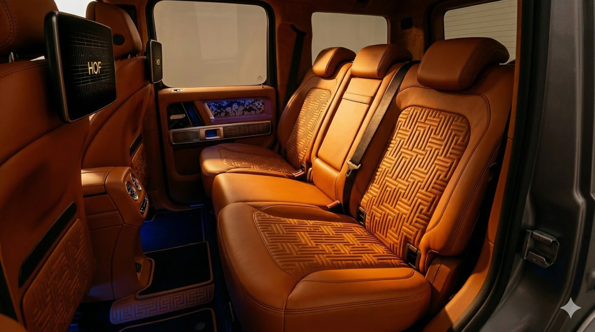

The rear — H-pattern embossed into amber leather, dual screens, a world curated for the connoisseur.
The dialogue — cast crystal resin meets embossed leather. The same H, two materials, one purpose.
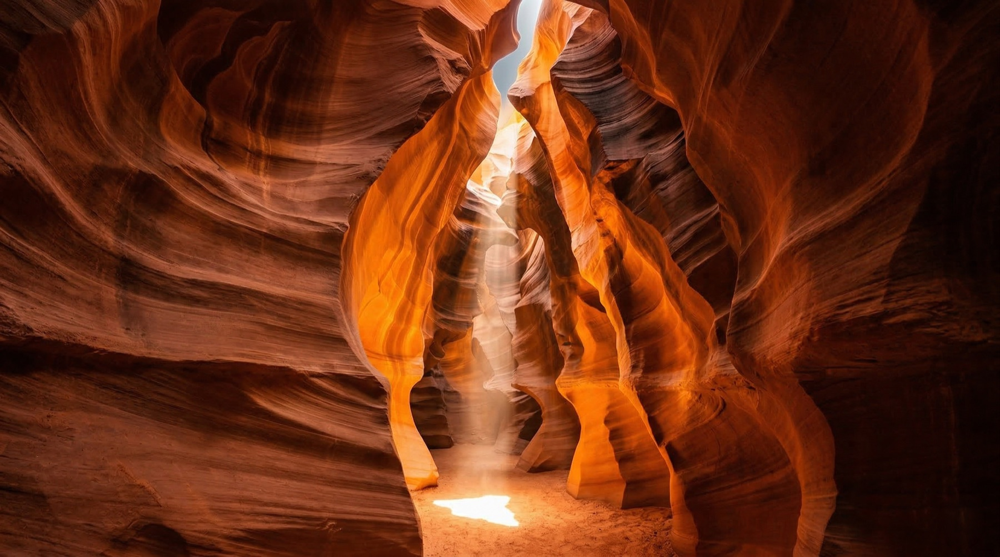
Light carved in stone — the same amber language, written by nature.
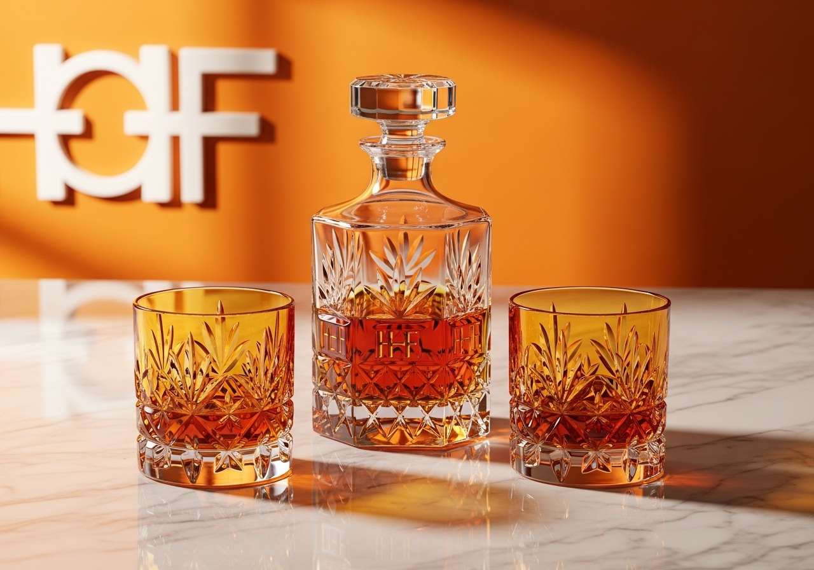
The Tokyo Crystal Set — Edo Kiriko tradition, carried from car to connoisseur.
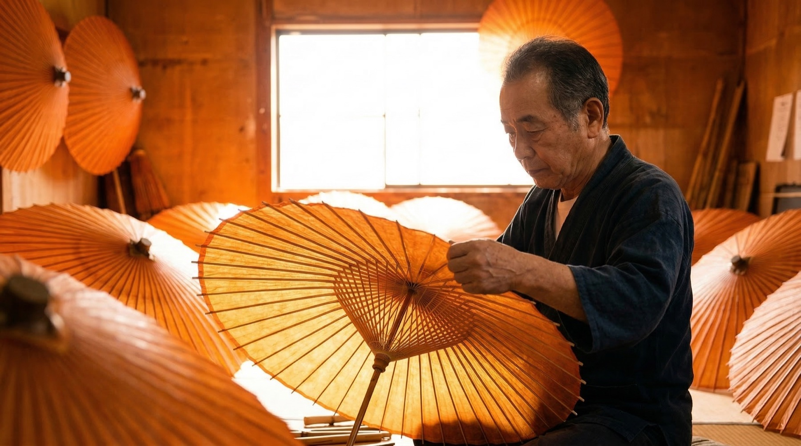
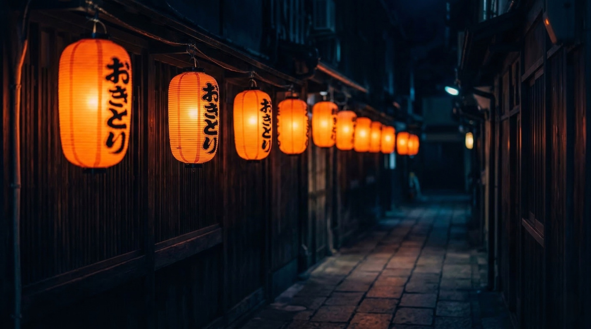
Precision by hand — the discipline that shapes every element.
Lantern alley — where amber light defines the atmosphere.
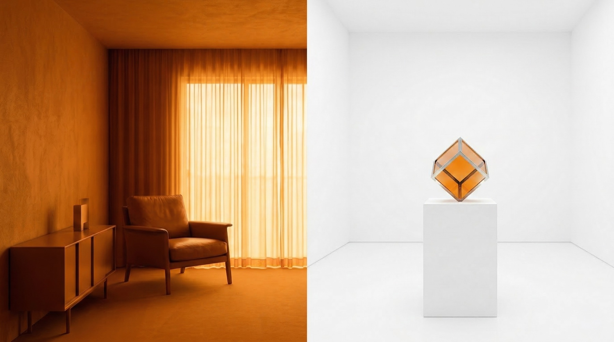
Two expressions — fire and gallery. The same crystal, two temperatures.
The crystal resin components are optical — designed to catch, hold, and redirect ambient light the way a prism breaks white into spectrum. The speaker surrounds become glowing rings. The steering wheel spokes carry transparent amber inserts that glow in peripheral vision.
The H-pattern embossed into the seats creates a tactile geometry that echoes the faceted cuts of Kiriko crystal. Touch and sight aligned. The same pattern, rendered in two materials — leather and resin — creating a dialogue between soft and solid, warm and cool, opaque and transparent.
Every crystal accent is placed where light naturally falls. Placed where light falls. Earned, never forced.
Composition II — all orange. The Sport Silhouette catches the last light.
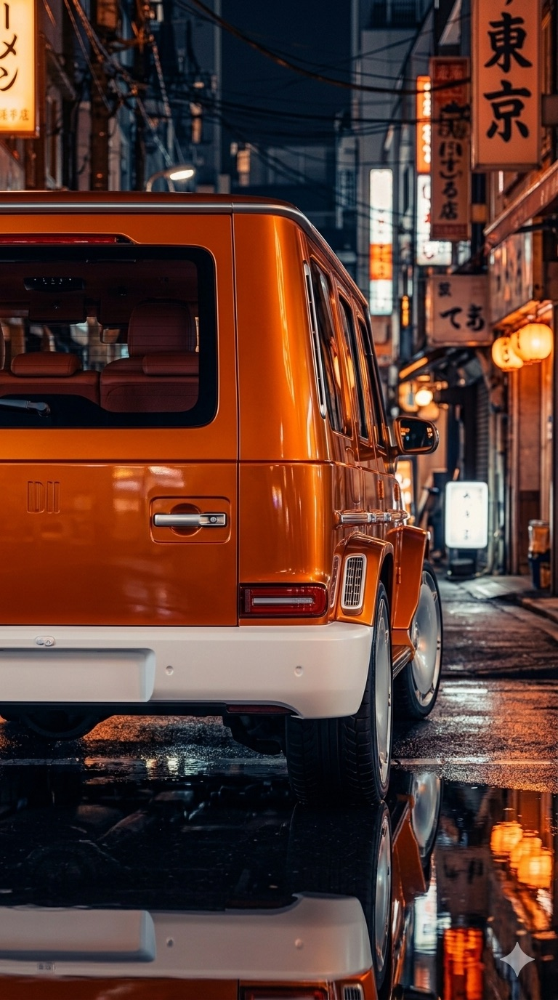
Composition I — silver catches the golden hour.
Tokyo at night — where amber meets neon.
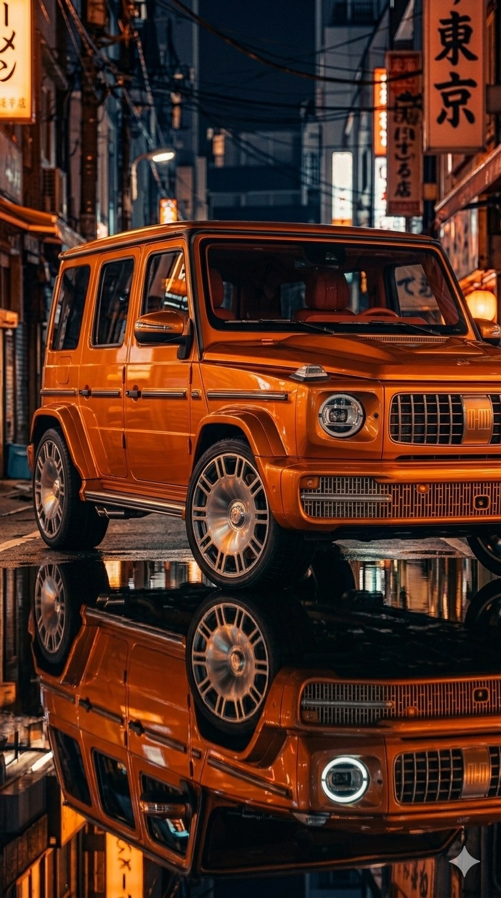
The city that never stops refining.
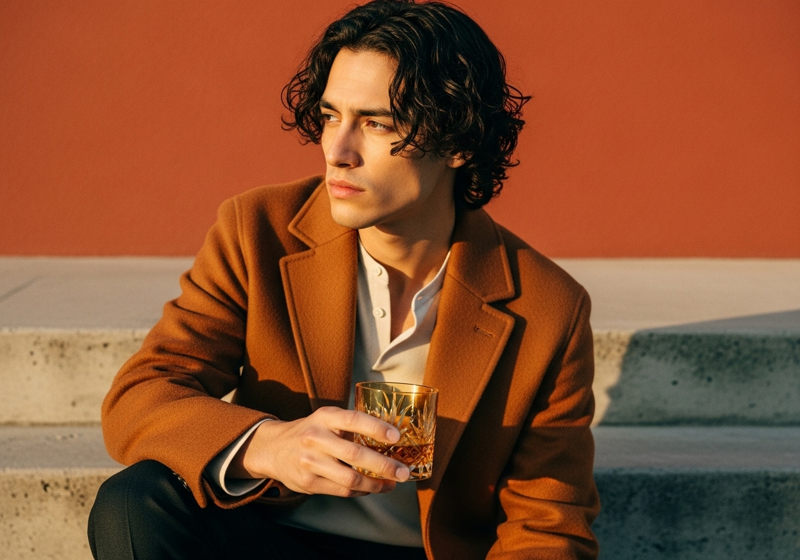
The glass, carried. Color blocking — orange coat, orange wall, amber crystal.
Tokyo at night — Edo Kiriko at the counter.
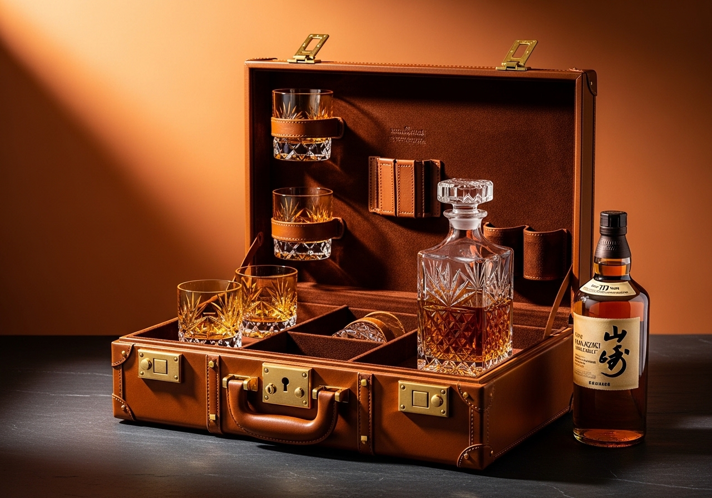
The Travel Case — crystal and whisky, trunk-style.
A moment. Hands, crystal, wood.
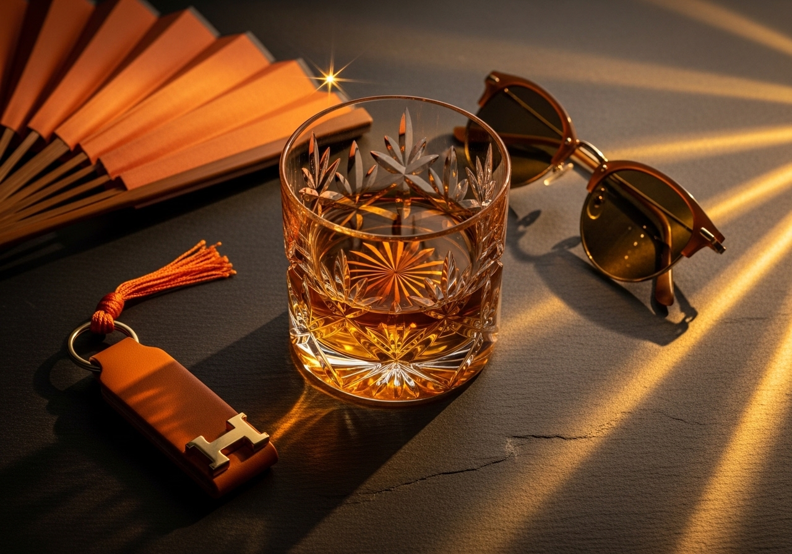
The world around the car — sensu, amber glass, gold hardware.
東京 — Eastern Capital. The city that never stops refining. Where tradition is not preserved but sharpened. Where the oldest crafts produce the newest forms.
Light made solid. Precision made visible. Fire frozen in crystal, carried in silver, worn in leather.
Spring Summer 2026. The moment where Edo Kiriko meets automotive Manufaktur — and the interior becomes a vessel for light.
"Curated, Not Made."
Two expressions, one crystal language. Discover the full Spring Summer 2026 collection — or begin your personal consultation.